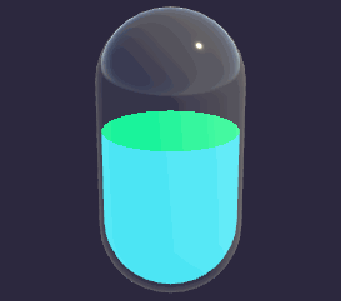

[1] step()을 적용하여 액체의 범위를 정해준다.
[2] clip()을 활용하여 윗부분을 투명하게 만든 후 뒷면의 색을 바꿔 윗부분이 채워진 것처럼 보이게 만든다.
[3] 액체의 각도를 X, Z 축으로 분리하여 관리한다. Rotate About Axis Node 유니티 공식 Doc

[4.a]에서 볼 수 있듯이 액체의 높이는 world space를 기반으로 하기 때문에 옆으로 눕혔을 시에 물이 꽉 채워지는 것을 볼 수 있다. 이 문제를 해결하기 위해서는 물병의 가로와 세로의 비율을 구하고 내적으로 기울기를 구하여 물병이 기울어질수록 일정 비율로 물의 높이를 낮춰주는 방식으로 문제를 해결했다. 이 방법은 물병이 대칭일 때만 자연스럽게 적용되는 단점이 있다. [4.b] 참고.

[5] position 기반 속력과 각속도(angular velocity)를 구하여 액체의 기울기에 영향을 주도록 만든다. 좌우로 물이 흔들리는 기능을 구현하기 위해서는 sin() 값을 흔들림 값에 곱해 구현했다.

△